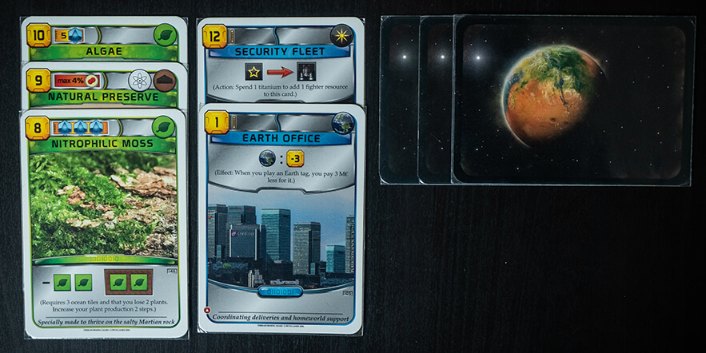

Maybe you’re already aware that we have an Instagram page where we make deep dives into the graphic design of already published board games, or maybe this is news to you. Either way, we decided that the learning opportunity you get from looking at the graphic design of other games should not be confined to the Instagram crowd. Therefore, we’ve decided to compile all the posts for one game into a single blog post, creating an all you can read graphic design bonanza. First up is Terraforming Mars.
Terraforming Mars is an engine builder and tile placement game with about a thousand cards (this might be a slight exaggeration) in which your goal is to be the one who contributes the most to making Mars hospitable. Terraforming mars has an extensive icon system that is used consistently throughout the game.
Game design: Jacob Fryxelius
Graphic design: Isaac Fryxelius
Publisher: Fryxgames, Stronghold Games
The card types in Terraforming Mars are easily distinguishable by their colors, but even people with color blindness can notice a slight difference in the shape of the frame around the image: The green (one time effect) cards have a frame with an upwards arch, the blue (continuous effect) cards have a downwards arch, and the red (event) cards have straight frame. The events also have the event tag (downwards pointing arrow).
The cards are also designed so you can stack them together as much as possible after playing them, while still showing the necessary information. For the green cards you only usually need to see the tags so you can stack them together quite tightly. Because the blue cards have an ongoing effect you need to be aware of, they are designed with the ongoing effect at the top, above the image, so you don't need to take up more space than necessary on the table. The red cards are immediately turned face down, as their tags only count for when they are played.
The actions and ongoing effects on the blue cards all follow the same iconographic rules: a colon means it’s a triggered effect, the trigger being to the left of the colon and the effect being to the right. A right pointing arrow means it’s an activated ability which you may take once per generation, the cost is displayed on the left of the arrow while the reward is displayed on the right. Because this system is used consistently, you can understand any card as long as you know the icons. And if you don’t understand, there is always the explanatory text.
The tag icons on the cards are all easily recognizable, but for new players there is sometimes some confusion between what is a tag and what is a resource, since they have the exact same icons apart from the tags being round and the resources being square. Once you understand that though, you can easily spot the difference.
The way the milestones and awards are presented and claimed in Terraforming Mars works really well. When claiming one, you put one of your cubes on top of the first free cost icon (covering it up so you can only see the free ones) and one cube on top of the milestone/award you want to claim. This way it is easy to see both what the cost for claiming one will be as well as which ones are still free to claim, and also how many more can be claimed. The icons for the milestones and awards are mostly self explanatory, as long as you have grasped how the iconography works in the game in general, but some are harder to understand from the icons.
In Terraforming Mars the main goal is, of course, to terraform Mars. This is done by raising the global parameter levels of oxygen, heat and water. These parameters are tracked on the game board: oxygen and heat through numeric scales, and water through a stack of water tiles that need to be emptied.
Because they are easily visible on the game board it's easy to keep track on how close the game is to ending. The scales for oxygen and heat also have a couple of places where raising the parameter to that specific level grants a bonus, indicated by icons connected to the scales.
In Terraforming Mars you can, apart from playing cards, also utilize a number of standard projects. These are printed on the game board as they are available at all times. They are presented using the same logic as activated abilities on blue cards: The cost is shown to the left, then a forward facing arrow indicates that the cost will give you what it points at, and then the effect is displayed to the right.
The scoring track in Terraforming Mars is well designed, using a lighter color to indicate every 5 steps (making scoring at the end much easier).
The spot where you start at the beginning of the game is also indicated, using the icon for "Terraform rating", which is both your points and the basis for your income. The fact that the icon is placed next to the scoring track also makes it easier to remember what the icon means when seeing it on cards.
The central part of the game board in Terraforming Mars is the actual planet itself, with hexagonal spaces to place tiles on. The grid is not so attention grabbing that it distracts from the other elements on the board, but it’s also not hard to tell where each space starts and ends.
The resource icons on each space, representing what you get when you place a tile there, follow the same design as the icons everywhere else in the game. Therefore they become intuitive if you are familiar with the game.
Since the icons only matter when you are placing a tile there, it's advantageous that they are covered up by the placed tiles: They no longer serve any purpose and would therefore only distract if they were still visible. The fact that they are covered up makes it easier to, at a glance, see what resources you can gain from placing a tile on the board.
The tiles in Terraforming Mars come in four main types: Water, greenery, city, and special tiles. They are all easily distinguished by both color, texture/background and icons. Even for people with color blindness the colors almost do the trick on their own.
Most tiles are owned by a player (all but water) and you can easily see which ones you are supposed to mark as yours when you place them from the designated spaces for your cubes.
The cubes on the tiles also make it really easy to see who owns what at a glance.
We love the new player mats for Terraforming Mars that were included in the Turmoil kickstarter. The double layered mats make it so much easier to track your production, and slightly bumping the mat is no longer a devastating disaster.

The zig zag element of the trackers are just enough so the cubes don't slide around on their own, but they don't make it hard to move the cubes when your production changes.
The inclusion of the trackers indicating tens is also a great fix, now we don't have to stack four cubes on top of each other!
The iconography on the new player mats are almost exactly the same as on the old mats, and it was pretty solid already. The same icons and logic as in the rest of the game are used, which ties it together in a nice way. We especially like the solution they chose for energy turning into heat: The gap in the border between them both makes it clearer what the arrow between them means, and makes actually moving the cubes easier.
We would say that Terraforming Mars is a good example of how to work with iconography. It shows that if you make sure to make up a system for your iconography first, you can combine icons to tell the players almost anything.